OS - Lab2
内存管理
课下
Lab2 实验报告
一. 思考题
Thinking 2.1
请你根据上述说明，回答问题：
在我们编写的程序中，指针变量中存储的地址是虚拟地址还是物理地址？
MIPS汇编程序中lw，sw使用的是虚拟地址还是物理地址？
答：
虚拟地址。自身所写的程序的指针储存地址为映射到进程地址空间的偏移地址，不同进程地址空间是相互隔离的，不同进程两个值相同的指针对应的真实内存是不同的
虚拟地址。其地址为32位而物理地址为64位
- 大多数的应用程序无法得知实际的物理地址，而是使用电脑的内存管理单元及操作系统的内存映射，为
逻辑地址或虚拟地址定址
Thinking 2.2
请从可重用性的角度，阐述用宏来实现链表的好处。
请你查看实验环境中的
/usr/include/sys/queue.h，了解其中单向链表与循环链表的实现，比较它们与本实验中使用的双向链表，分析三者在插入与删除操作上的性能差异。
答：
链表实现图示：
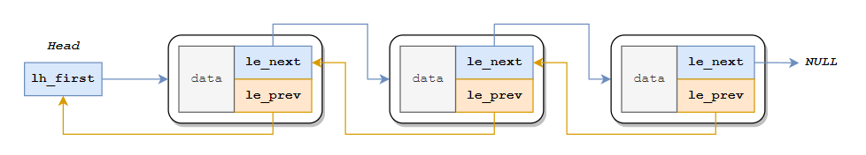用宏实现链表这一链表设计并不提供提供一个将其他结构体包起来的结构体，而是提供了一种可与其他结构体组合的小结构体；任何一个结构体，只要在自身加入这样一个链表结构体，就能应用链表的各种操作
好处：
小结构体添加方便，基本不影响对原结构体的访问； 定义的结构具有很好的扩展性，在实际使用时，可以通过在某一结构体中定义
LIST_ENTRY链接的指针的总的名称'field'使得这一结构体变成可以被链接的对象小结构体中
le_prev是一个指针的指针，因此在某个位置前后插入/删除节点时都不需要进行额外的遍历对于双向链表需要实现的各种方法，实现了较好的封装
C 语言并不支持
泛型，该链表设计通过宏另辟蹊径来实现了泛型
三者比较如下：
本实验中使用的双向链表的
LIST_ENTRY如图：
/usr/include/sys/queue.h中的单向链表的SLIST_ENTRY如图：
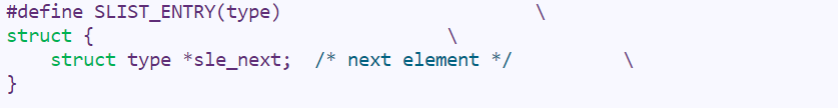/usr/include/sys/queue.h中的循环链表的CIRCLEQ_ENTRY如图：
且其在CIRCLEQ_INIT实现了循环功能
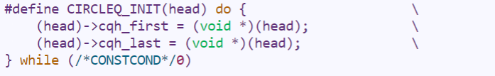
性能差异：
插入操作：
三者的插入操作如下:
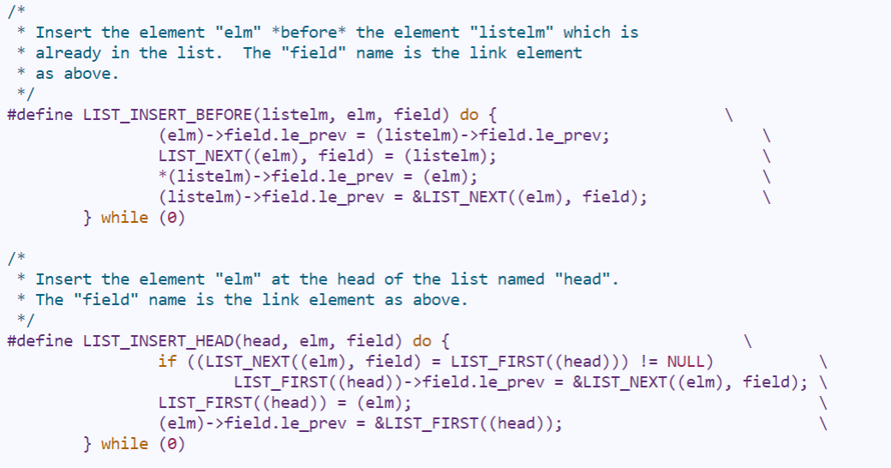
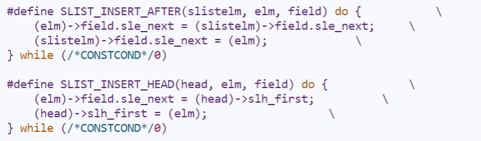
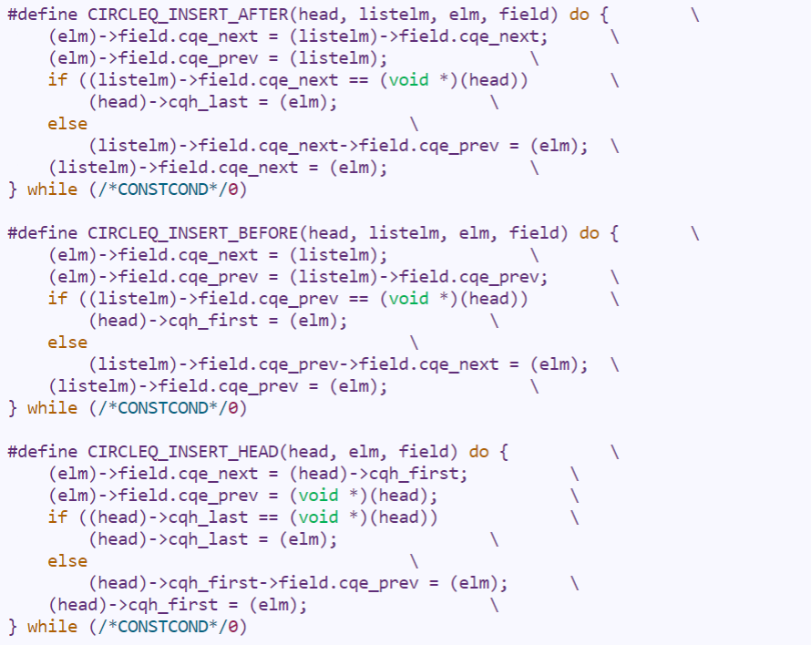可见：
单向链表虽然只能向后插入，但是性能最高
双向链表由于使用了
le_prev，比循环链表少了一次访存，性能次之循环链表操作最复杂，性能最次
删除操作：
三者的删除操作如下:


可见：
双向链表与循环链表均可由所给链表项直接执行删除操作；同样，由于使用了
le_prev，双向链表比循环链表少了两次访存，因此双向链表性能最优，循环链表次之单项链表由于所给链表项前一项未知，需要从头开始遍历以找到前置链表项，性能最次
Thinking 2.3
请阅读 include/queue.h 以及 include/pmap.h ，将 Page_list 的结构梳理清楚，选择正确的展开结构
1 | A: |
1 | B: |
1 | C: |
答：
选 C
解析：
Page_list的定义在include/pmap.h：
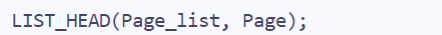
此时定义为：1
LIST_HEAD(Page_list, page);
其中宏定义
LIST_HEAD定义在include/queue.h：
此时定义为：1
2
3struct Page_list {
struct Page *lh_first;
}其中
struct Page定义在include/pmap.h：
此时定义为：1
2
3
4
5
6struct Page_list {
struct {
Page_LIST_entry_t pp_link;
u_short pp_ref;
}* lh_first;
}其中
Page_LIST_entry_t定义在include/pmap.h：
此时定义为：1
2
3
4
5
6struct Page_list {
struct {
LIST_ENTRY(Page) pplink;
u_short pp_ref;
}* lh_first;
}其中
LIST_ENTRY定义在include/queue.h：
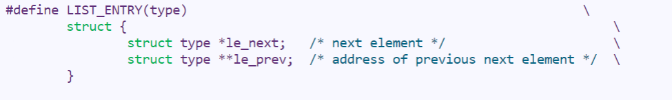
此时定义为：1
2
3
4
5
6
7
8
9struct Page_list {
struct {
struct {
struct Page *le_next;
struct Page **le_prev;
} pp_link;
u_short pp_ref;
}* lh_first;
}因此，选 C
Thinking 2.4
请你寻找上述两个 boot_* 函数在何处被调用。
( boot_pgdir_walk & boot_map_segment )
答：
Linux的grep指令可用于查找内容包含指定的范本样式的文件，并把含有范本样式的那一列显示出来何处调用
boot_pgdir_walk函数：
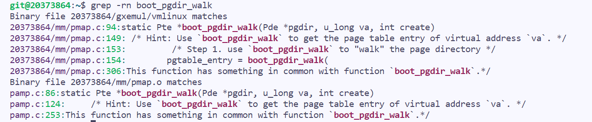何处调用
boot_map_segment函数：
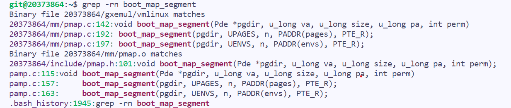
Thinking 2.5
请你思考下述两个问题：
请阅读上面有关
R3000-TLB的叙述，从虚拟内存的实现角度，阐述ASID的必要性请阅读
《IDT R30xx Family Software Reference Manual》的Chapter 6，结合ASID段的位数，说明R3000中可容纳不同的地址空间的最大数量
答：
ASID（address space identifier）是用于区分TLB中不同进程的一个标识符，由于操作系统可以同时运行多个进程，因此在CPU的系统寄存器中设置ASID，这样不同进程会拥有不同的ASID，多者都在TLB中，这样当一个进程占据CPU的时候，不会使用其他进程的页表项，因此操作系统切换进程的时候，TLB中原本的映射还存在，也不需要重新加载（最坏情况会增加64次的缺页中断），这提高了TLB效率EntryHi, EntryLo寄存器划分：
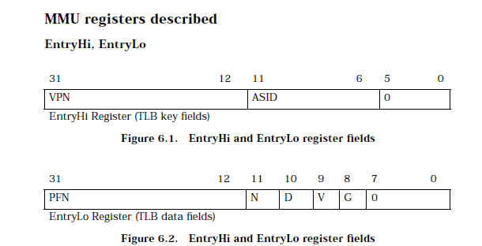
由上图可知ASID段的位数为6位，因此可容纳不同的地址空间的最大数量为26 = 64
Thinking 2.6
请你完成如下三个任务：
tlb_invalidate和tlb_out的调用关系是怎样的？请用一句话概括
tlb_invalidate的作用逐行解释
tlb_out中的汇编代码
答：
tlb_invalidate和tlb_out的调用关系：tlb_invalidate的实现：(mm/pmap.c)
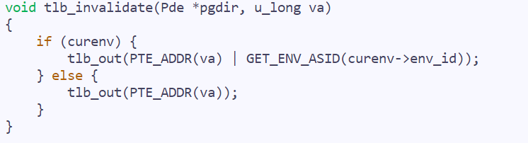tlb_out的定义及实现：(mm/tlb_asm.S)
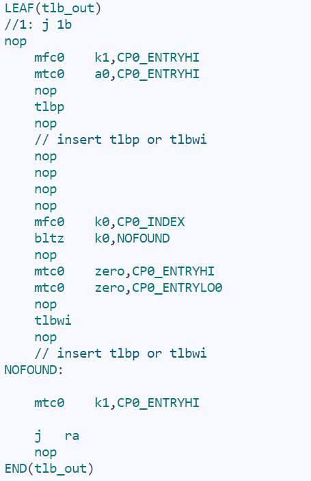可知
tlb_invalidate通过调用tlb_out完成其功能
tlb_invalidate的作用：
对给定特定进程的context，这个函数可以让这个进程对应页表中的这个虚拟地址对应的TLB表项失效逐行解释如下：
1
2
3
4
5
6
7
8
9
10
11
12
13
14
15
16
17
18
19
20
21
22
23
24
25
26
27
28
29
30
31
32
33
34
35
36
37
38
39
40LEAF(tlb_out) # 函数开头
nop
# 保存 CP0_ENTRYHI 中数值至 $k1
mfc0 k1, CP0_ENTRYHI
# 将 $a0 (传入参数：u_int entryhi) 中数值写入到 CP0_ENTRYHI
mtc0 a0, CP0_ENTRYHI
nop
# 用于查看 TLB 是否可以转换虚拟地址（即命中与否），
# 根据 CP0_ENTRYHI 中的 Key（包含 VPN 与 ASID），
# 查找 TLB 中与之对应的表项；如果命中，并将表项的索引存入 CP0_INDEX 寄存器；
# 若未找到匹配项，则 CP0_INDEX 最高位被置 1
tlbp
nop
nop
nop
nop
nop
# 将保存着查询结果的 Index 寄存器保存至 $k0
mfc0 k0, CP0_INDEX
# 将 $k0 的值（也就是 Index 寄存器的值）与 0 比较，
# 判断是否查询成功（ Index 最高位置 1 会使寄存器值变为负数），
# 查询失败（没有查到）则进入 NOFOUND
bltz k0,NOFOUND
nop
# 将 CP0_ENTRYHI 清零
mtc0 zero, CP0_ENTRYHI
# 将 CP0_ENTRYLO0 清零
mtc0 zero, CP0_ENTRYLO0
nop
# 将 CP0_ENTRYHI 和 CP0_ENTRYLO0 的内容写入 CP0_INDEX 对应的 TLB 条目
tlbwi
nop
NOFOUND:
# 查询失败，恢复 CP0_ENTRYHI
mtc0 k1, CP0_ENTRYHI
# 函数返回
j ra
nop
END(tlb_out) # 函数结束
Thinking 2.7
在现代的 64 位系统中，提供了 64 位的字长，但实际上不是 64 位页式存储系统。假设在 64 位系统中采用三级页表机制，页面大小 4KB。由于 64 位系统中字长为 8B ，且页目录也占用一页，因此页目录中有 512 个页目录项，因此每级页表都需要 9 位。因此在 64 位系统下，总共需要 3 × 9 + 12 = 39 位就可以实现三级页表机制，并不需要 64 位。现考虑上述 39 位的三级页式存储系统，虚拟地址空间为 512 GB，若记三级页表的基地址为 PTbase ，请你计算：
三级页表页目录的基地址
映射到页目录自身的页目录项（自映射）
答：
39位 -> 需要用一个字（64位）存储，其中低 39 位为有效位，高位置零总虚拟地址空间：
512GB -> 0x8000000000 (0x0000000000 ~ 0x7FFFFFFFFF)页面大小：
4KB字长：
8B每级页目录中页表项个数：
4KB / 8B = 512 (项)第三级页表基地址：
PTbase第三级页表总页表项个数：
5123 = 227 (项)每个页表项对应地址空间大小：
0x8000000000 / 227 = 0x1000第三级页表对应二级页表项： 第
PTbase / 0x1000个页表项第三级页表占用空间：
(64 / 8) * 227 = 0x40000000第三级页表对应地址空间：
(PTbase) ~ (PTbase + 0x400000000)第三级页表对应第二级页表页目录项：
(64 / 8) * (PTbase / 0x1000)因此第二级页表项基地址：
PMDbase = (PTbase + (64 / 8) * (PTbase / 0x1000))（此即为三级页表页目录的基地址）第二级页表总页表项个数：
5122 = 218 (项)每个页表项对应地址空间大小：
0x400000000 / 218 = 0x1000第二级页表对应一级页表项： 第
(PMDbase - PTbase) / 0x1000个页表项第二级页表占用空间：
(64 / 8) * 218 = 0x200000第二级页表对应地址空间：
(PMDbase) ~ (PMDbase + 0x200000)第二级页表对应第一级页表页目录项：
(64 / 8) * ((PMDbase - PTbase) / 0x1000)因此第一级页表项基地址：
PGDbase = (PMDbase + (64 / 8) * ((PMDbase - PTbase) / 0x1000))第一级页表总页表项个数：
512 = 29 (项)每个页表项对应地址空间大小：
0x200000 / 29 = 0x1000第一级页表对应根页表项： 第
(PGDbase - PMDbase) / 0x1000个页表项第一级页表占用空间：
(64 / 8) * 29 = 0x1000第一级页表对应地址空间：
(PGDbase) ~ (PGDbase + 0x1000)因此，映射到页目录自身的页目录项的地址为
PGDbase + (64 / 8) * ((PGDbase - PMDbase) / 0x1000)
Thinking 2.8
任选下述二者之一回答：
简单了解并叙述
X86体系结构中的内存管理机制，比较X86和MIPS在内存管理上的区别。简单了解并叙述
RISC-V中的内存管理机制，比较RISC-V与MIPS在内存管理上的区别。
答：
简单了解并叙述 x86 体系结构中的内存管理机制，比较 X86 和 MIPS 在内存管理上的区别：、
在
x86架构中内存被分为三种形式，分别是逻辑地址(Logical Address)，线性地址(Linear Address)和物理地址(Physical Address)；其内存管理分为两个部分：分段和分页
分段提供了一种隔离每个进程或者任务代码、数据和栈模块的机制，保证多个进程或者任务能够在同一个处理器上运行而不会互相干扰
分页机制实现了传统请求调页的虚拟内存系统，在这种系统中，程序的执行环境块按需要被映射到物理内存中。分页机制同样可以用来隔离多个任务；对分页和分段机制进行不同的配置，可以分别支持简单的单任务系统、多任务系统或者使用共享内存的多处理器系统而
MIPS使用内存管理单元(MMU)管理内存，内存管理单元(MMU)是处理器支持操作系统高效运行的基础，与软件内存管理模块，相结合完成了虚拟地址到物理地址的转换。同时，MMU能够对处理器发出的地址进行合法性检验，在硬件上提供了内存访问授权控制
二. 实验难点：
大量C语言代码的阅读与理解
补全代码时的代码之间的逻辑关系复杂
链表宏定义的代码形式较为陌生，链表结构较为复杂
多级页表映射关系较难理解TLB具体实现困难操作系统初始化时的所需函数数量颇大，相互之间的调用关系繁多
三. 体会与感想：
难度评价：
9/10实验用时：
12h+， 撰写实验报告用时：7h体会与感想：
Lab2使我深刻认识到操作系统启动时的内存操作和函数调用，对操作系统访存中的TLB结构以及页表结构有了较深的理解，对操作系统代码执行流程有一个大致的基础的了解
课上
lab2-1-exam：
需要增加 页面保护 功能，对每一个页面增加 未保护 和 已保护 的状态，并完成两个函数分别实现 设置 / 消除 对应页面的保护状态的功能，实现较为简单，在 Page 中新增一个标识变量标记是否保护即可
lab2-1-Extra：
更改当前内存的分配机制，实现 伙伴系统 的 初始化 / 分配 / 释放 函数，主要问题是如何规划内存的状态并且在 分配 / 释放 时正确 拆分 / 合并 内存；由于分隔和释放方法考虑错了，导致最后也没做上来(ಥ_ಥ)
lab2-2-exam:
反向查询函数：根据所给的物理页面和以及一级页表基地址，输出页表中所有映射此物理页面的页表项的页表编号并且返回总数，通过两次 for 循环遍历
lab2-2-Extra:
快慢内存分配：将 64MB 的内存空间分配为 高16MB 的快内存和 低32MB，编写函数使得这两块空间有着独立的分配、回收内存管理（链表）机制；由于一些未知问题一直没过
by Tan